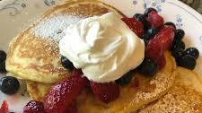

fluffy-pancake

Descrption
You can make pancake batter ahead of time. Simply s
tore the batter in an airtight container in the fridge for up to two days,
then cook according to the recipe. For the fluffiest pancakes, though,
it’s best to mix up the batter just before cooking.
ingredients
- ¾ cup milk
- 2 tablespoons white vinegar
- 1 cup all-purpose flour
- 2 tablespoons white sugar
- 1 teaspoon baking powder
- ½ teaspoon baking soda
- ½ teaspoon salt
steps for making dish
- step1: take potato
- step 2: put in saucepan with dish